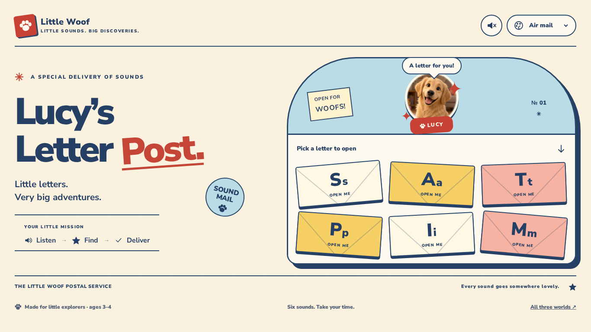
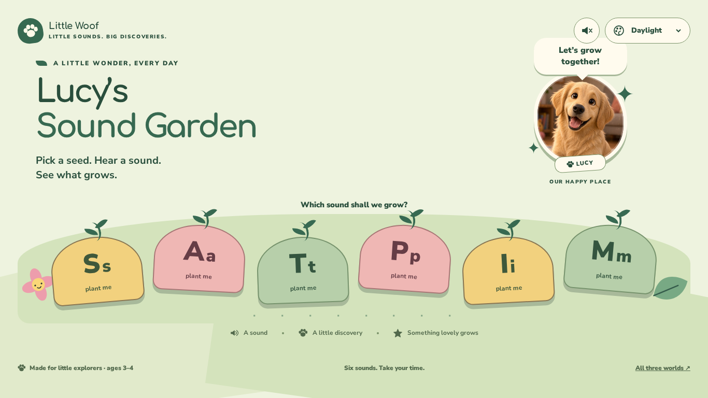
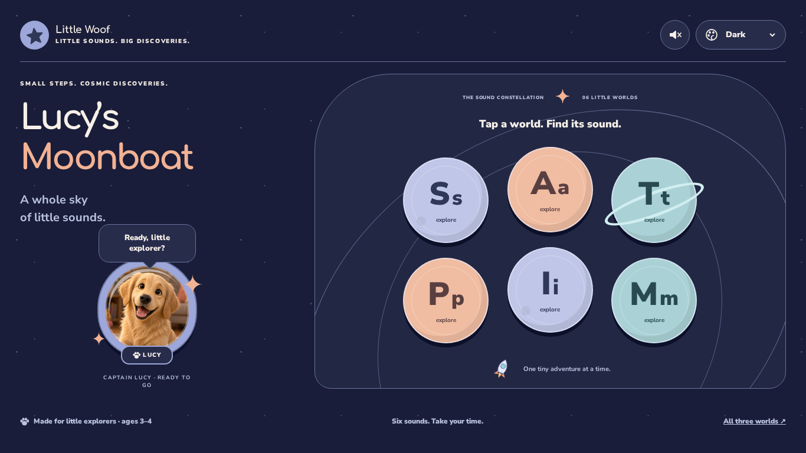

✳ Little Woof
THREE WORLDS.
ONE VERY GOOD DOG.
ONE VERY GOOD DOG.
A new beginning for Ready Set ABC
Little sounds.
Big discoveries.
Meet Lucy. Pick a world. Play with letters.
Three little adventures for curious kids aged 3–4.

01 / OPEN & DISCOVERTactile · cheeky · full of character
Lucy’s Letter Post
Open a letter, find its sound, and send a little happiness. A busy post office for tiny hands.
Play Letter Post ↗
02 / PLANT & PLAYGentle · earthy · quietly magical
Lucy’s Sound Garden
Pick a little seed and help a sound bloom. A soft, spacious garden that grows with every discovery.
Play Sound Garden ↗
03 / LISTEN & EXPLOREDreamy · curious · a little cosmic
Lucy’s Moonboat
Join Captain Lucy in a sky of sounds. Visit a planet, follow its signal, and light up a new star.
Play Moonboat ↗Each world includes six playable sounds, three color themes, recorded voice, keyboard controls, and a quieter reduced-motion mode.